Overview
Accountants are becoming busier and busier, with handling a client's documents in one place to making sure that another client's return has been processed and accepted (all while trying to expand their practice). How do we harness all the screens that already dominate an accountants daily life to make their job easier, deliver actionable value in under three seconds, and reduce friction with our platform? As an experience design intern, I researched and discovered mobile insights for Intuit, and used these insights to create robust mobile prototypes for the Intuit Tax Online product.
Goal
Discover the best cross device use cases for accountants and validate these use cases through rapid prototyping.
Problem Statement
I am a small business accountant
I am trying to balance client and practice management
But I'm flying blind
Because the tools and information are not easy to access
Which makes me feel behind, uncertain, and trapped.
Discover
Who
Meet Andrew Bison, CPA. Here's how his day currently goes:
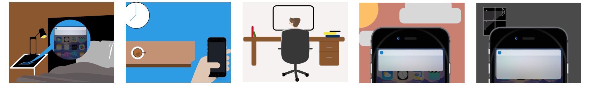Andrew, usually wakes up with some notifications. He checks these while he's making his coffee before heading to work. At work, he uses his Dell Monitor to manage clients, find ways to grow his practice, and constantly check his email for updates. On his way out of the office, Andrew completes some digital chores before heading home for dinner. He checks Facebook, Twitter, and of course Email right before hitting the sack.
Now, knowing how Andrew uses the technology around him, how can we design the most magical cross-device experience for him?
Ideas
After carefully examining the Intuit Tax Online (ITO) Platform, I made a graph of ideas with everything ITO can currently do (that we aren't doing) and everything that ITO could potentially do. This graph allowed me to figure out the riskiest (and potentially the most magical) ideas.
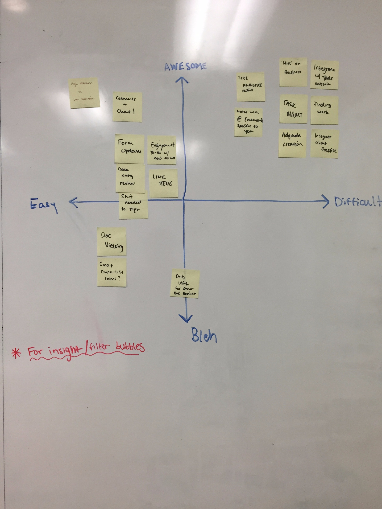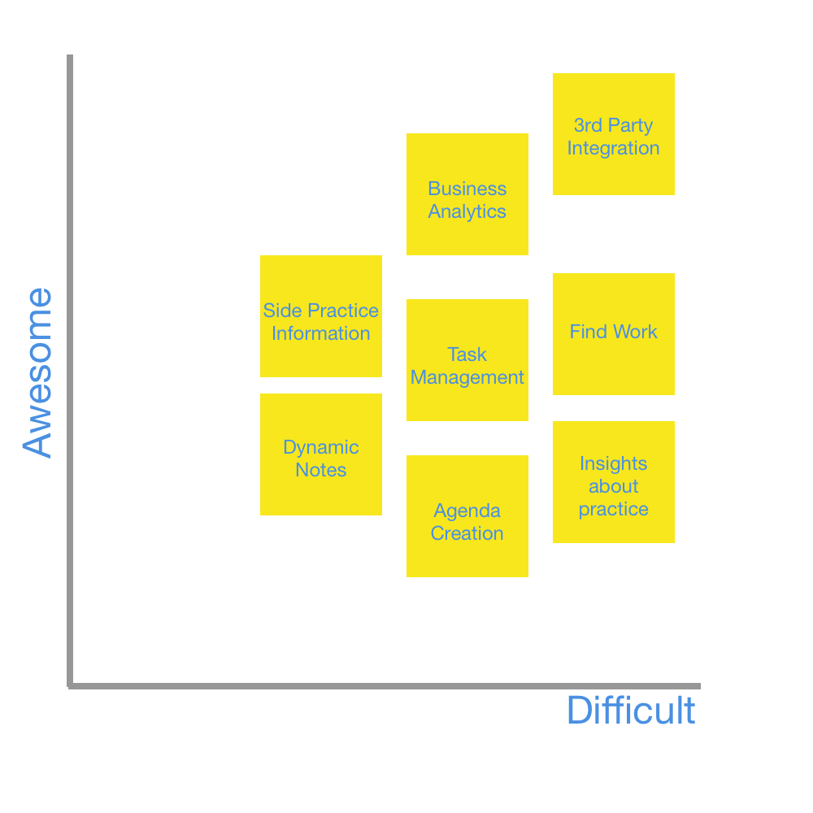
Stack-Rank Testing
I now had all these ideas graphed out, but how was I supposed to figure out which ones would be the most valuable to accountants? Time to test. I converted all these ideas into use cases, and laid out each use case in two piles: green cards and orange cards.
Green - everything ITO can do right now. Orange - everything ITO can potentially do.
After conducting this exercise with 5 accountants, I had a clear idea of how an accountant's priorities shifted throughout the year, and how this shift would impact the product I planned to create.
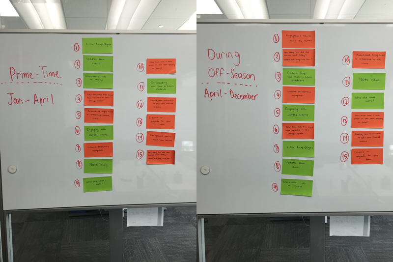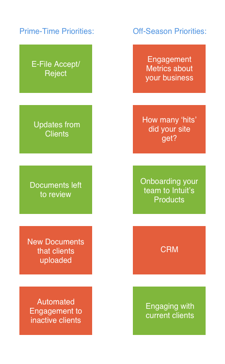
Define
Developing Use Cases
With the initial research completed, its now time to develop a cross-device use case that could mold itself into the analogs we've been thinking about. Sara (Senior Interaction Designer) and I starting brainstorming a substantial use case that we could test using a low-fi prototype:

Use Case Map
Sara and I decided to go with a use case that described an accountant received a W2 from a client with an unexplained discrepancy (something that occurs often during tax season). Here's how we mapped out the use case across devices, with an empathy line.
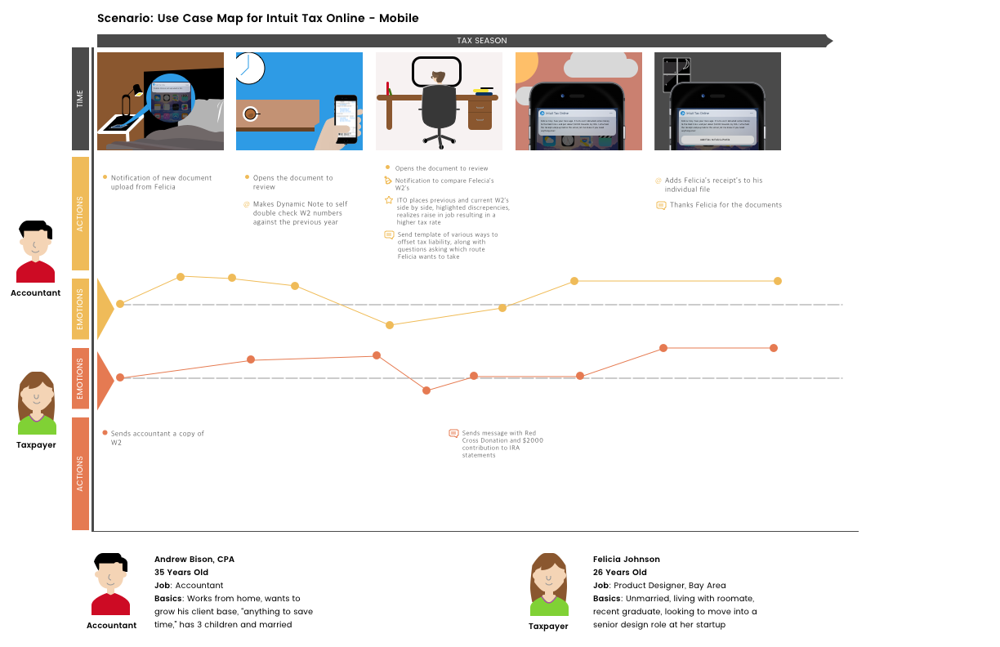The empathy line helped us figure out where both parties had low emotions and find a way to turn the tables and make this low point into a high, magical one.
Design
Low Fidelity Testing
We met with Jolie, an accountant with just three clients. Jolie is looking to expand her practice. She attends networking events, checks up with clients if they need any additional work, and posts on platforms like Craigslist. Jolie also constantly checks up on her clients' progress, as missing documents can be a huge headache. After playing with this low-fi prototype, she said that the another way she wants to be more engaged with her clients throughout the year (rather than just during tax season) is by sharing news from AccountantsToday, LinkedIn, or Twitter. At the end of the test, Jolie asked "Is that app already out yet? I really need something like that." Jolie's feedback, along with a couple of additional accountants, validated our hypothesis and it was time to move to a higher fidelity.
Use Case Map
Sara and I decided to go with a use case that described an accountant received a W2 from a client with an unexplained discrepancy (something that occurs often during tax season). Here's how we mapped out the use case across devices, with an empathy line.
The empathy line helped us figure out where both parties had low emotions and find a way to turn the tables and make this low point into a high, magical one.
Fork in the Road: Native Application vs Bots
With these insights, I began thinking about how a lot of the functionality that we were trying to implement could be achieved by a conversational bot. The beauty of a chat-bot is that it's proactive rather than reactive. But how would accountants react to this paradigm, as accountants are usually the ones in control? Only one way to find out: Test it.
Conversational Inspirations
Sketching Scenarios
Deliver
With these insights, I began thinking about how a lot of the functionality that we were trying to implement could be achieved by a conversational bot. The beauty of a chat-bot is that it's proactive rather than reactive. But how would accountants react to this paradigm, as accountants are usually the ones in control? Only one way to find out: Test it.
Chat Bot
Native Application
Activity Center Explorations
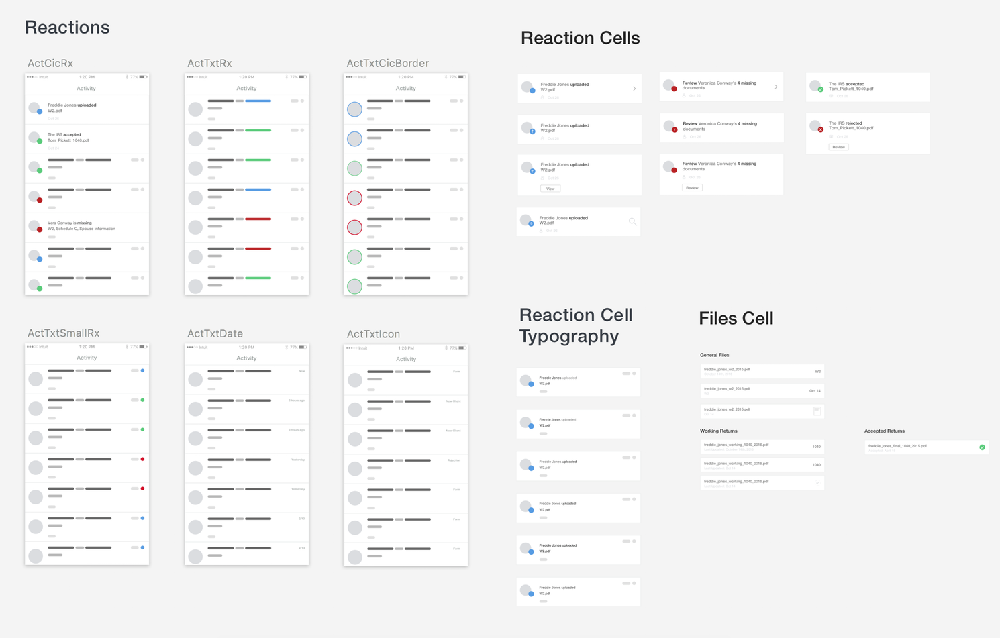Profile Center Explorations
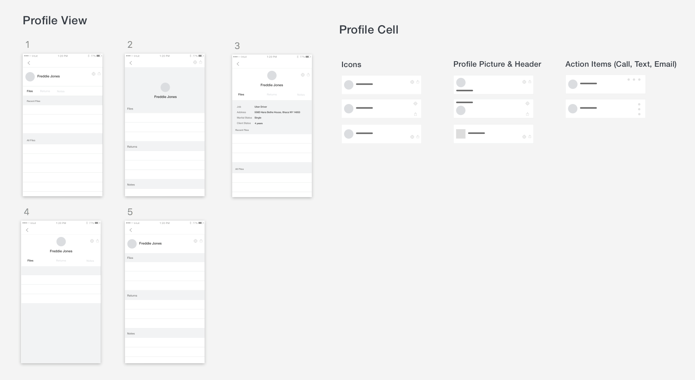Batch Notifications
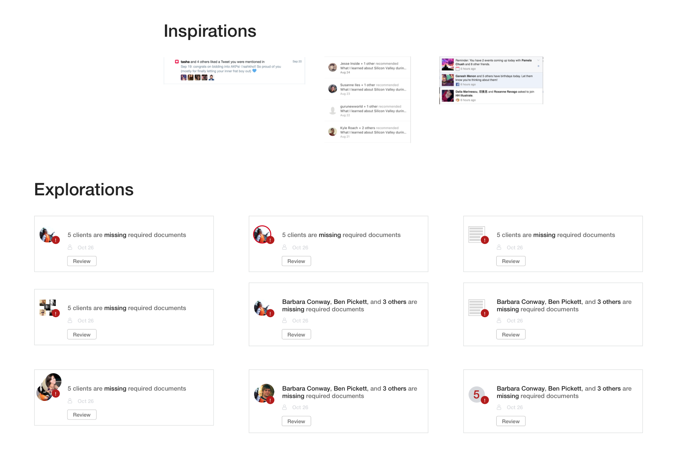Mid-Fidelity Flow
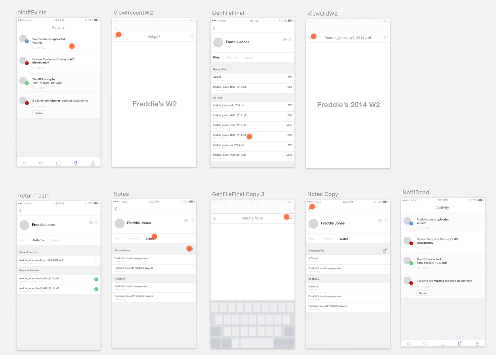High-Fidelity Flow
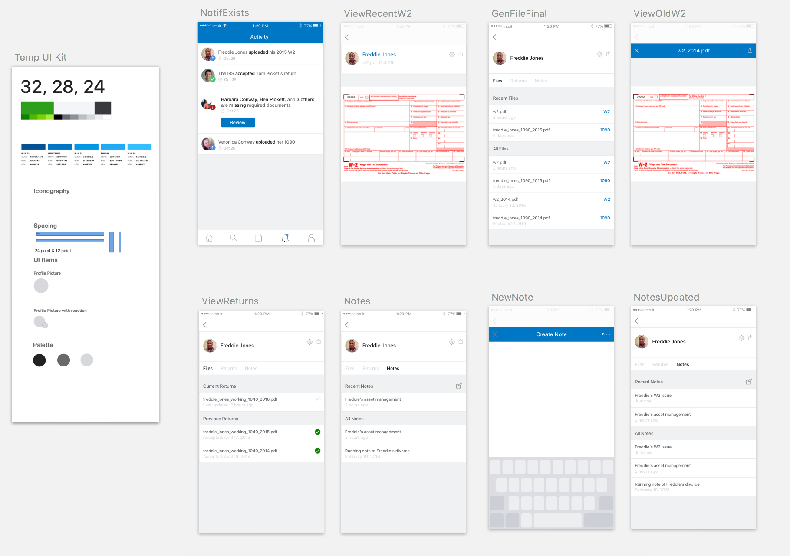